Home / Past papers / MLP End Term / this paper
IIT M IMPROVEMENT FN EXAM QDD1 22 Dec - 22 Dec 2024
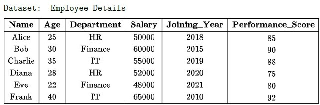
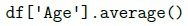
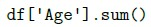
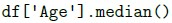
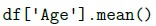
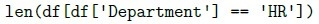
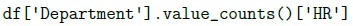
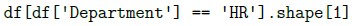
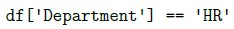
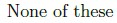
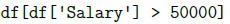
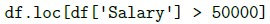
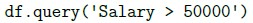
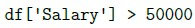
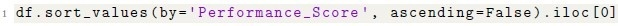
What does the following code return?- The row with the employee who has the lowest performance score.
- The row with the employee who has the highest performance score.
- The row with the highest salary.
- None of these.
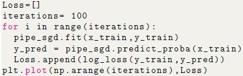
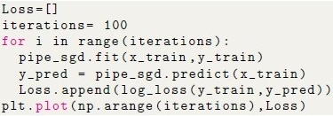
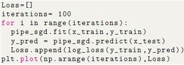
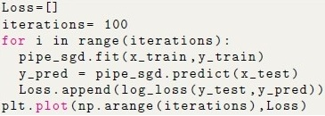
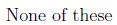
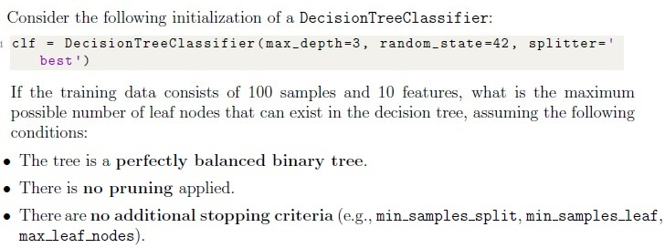
- 8
- 16
- 32
- 100
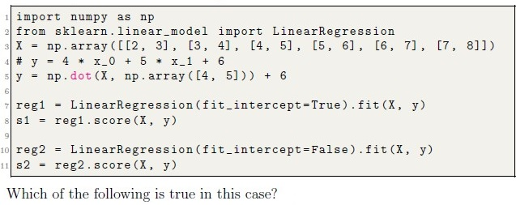
Consider the following code: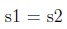
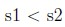
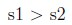
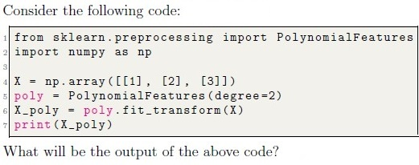
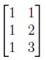
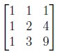
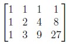
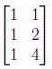
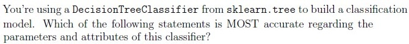
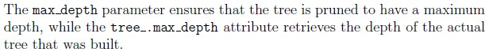
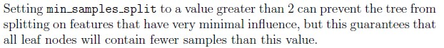
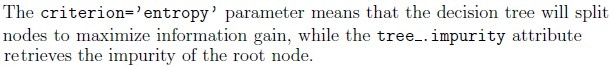
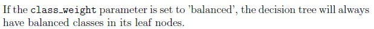
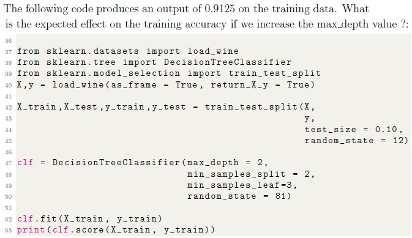
- Output score is likely to increase.
- Output score is likely to decrease.
- Output score may increase or decrease depending on other factors.
- Output score will remain the same.
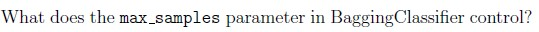
- The number of base estimators to be trained.
- The size of each sample batch for testing.
- The maximum number of features used for training.
- The number of samples to draw from X to train each base estimator
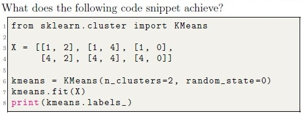
- Performs hierarchical clustering and outputs cluster distances.
- Outputs the silhouette score for the data points.
- Groups data points into 2 clusters and outputs the labels of the clusters foreach data point.
- Reduces the dimensionality of the dataset to 2 dimensions.
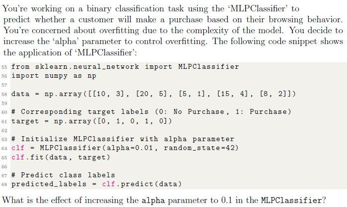
- It increases the model’s capacity to fit the training data closely, potentiallycausing overfitting.
- It adds a stronger regularization term to the loss function, reducing themodel’s complexity and helping prevent overfitting.
- It makes the model more prone to overfitting by increasing its sensitivity tonoise in the training data.
- It directly affects the learning rate, controlling how fast the model convergesduring training.
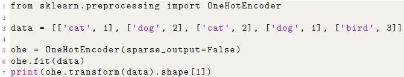
What will be the output of the following code?- 4
- 5
- 3
- 6
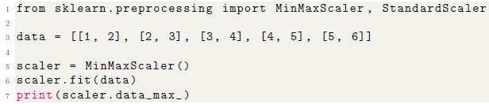
What will be the output of the following code?- [5, 6]
- [4, 5]
- [3, 4]
- [2, 3]
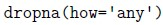
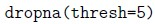
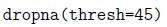
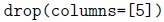
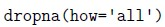
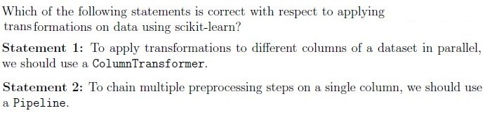
- Statement 1 False, Statement 2 False
- Statement 1 True, Statement 2 False
- Statement 1 False, Statement 2 True
- Both statements are True
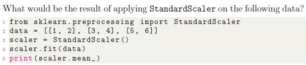
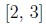
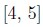
- 1.25
- 2.56
- 4.25
- 3.25
- Given code will return an error.
- It adjusts the learning rate based on the number of iterations.
- It specifies the learning rate to decrease as the model converges.
- It specifies the fraction of the dataset used for each step in the stochasticgradient descent.
- It defines the initial value for the learning rate and keeps it constantthroughout training.
- Learning rate in gradient descent
- Bias in a linear regression model
- Number of clusters in k-means
- Minimum leaf size in decision trees
- It decreases the variance among individual trees.
- It increases the variance among individual trees.
- It reduces the number of samples used for training each tree.
- It reduces overfitting by restricting tree depth.
- [47, 31, 18, 95, 77]
- [31, 41, 85, 31]
- [47, 31, 18]
- [47, 31, 85, 77]
- [31, 41, 18, 95, 85, 77]
- [18, 95, 85, 77]
- The neural network contains 3 hidden layers with 5 neurons in each hiddenlayer
- The neural network contains 5 hidden layers with 3 neurons in each hiddenlayer
- The neural network contains 2 hidden layers with 3 neurons in the secondhidden layer
- The neural network contains 2 hidden layers with 5 neurons in the first hiddenlayer
- None of the given options are correct

- GaussianNB
- LogisticRegression
- SGDClassifier
- RandomForestClassifier
- Using an Elbow Curve.
- Computing Silhouette Scores.
- Cross-validation with multiple folds.
- All of these
- It measures how well each sample is clustered.
- A higher score indicates better-defined clusters.
- It requires ground truth labels (target variable) to compute.
- It can be used to evaluate the quality of any clustering algorithm.
Answer key
- Q1 (MCQ, 1 marks): D
- Q2 (MSQ, 3 marks): A, B
- Q3 (MSQ, 3 marks): A, B, C
- Q4 (MCQ, 1 marks): B
- Q5 (MCQ, 4 marks): A
- Q6 (MCQ, 4 marks): A
- Q7 (MCQ, 3 marks): A
- Q8 (MCQ, 3 marks): B
- Q9 (MCQ, 3 marks): A
- Q10 (MCQ, 3 marks): A
- Q11 (MCQ, 3 marks): D
- Q12 (MCQ, 3 marks): C
- Q13 (MCQ, 3 marks): B
- Q14 (MCQ, 2 marks): D
- Q15 (MCQ, 2 marks): A
- Q16 (MCQ, 2 marks): C
- Q17 (MCQ, 2 marks): D
- Q18 (MCQ, 2 marks): C
- Q19 (MCQ, 2 marks): B
- Q20 (MCQ, 2 marks): D
- Q21 (MCQ, 2 marks): B
- Q22 (MCQ, 2 marks): C
- Q23 (MCQ, 2 marks): B
- Q24 (MSQ, 4 marks): A, B, C, E
- Q25 (MSQ, 4 marks): A, C
- Q26 (MSQ, 4 marks): C, D
- Q27 (MSQ, 3 marks): A, C, D
- Q28 (MSQ, 3 marks): A, C
- Q29 (MSQ, 3 marks): A, B
- Q30 (MSQ, 3 marks): A, B, C
- Q31 (MSQ, 3 marks): A, B
- Q32 (MSQ, 3 marks): A, B, D
- Q33 (MSQ, 2 marks): A, B, D
- Q34 (SA, 3 marks): 1
- Q35 (SA, 3 marks): 1
- Q36 (SA, 3 marks): 1
- Q37 (SA, 2 marks): 1.0
Concepts this paper tests
Auto-generated summary from the source site. Handy as a checklist; the lessons above explain each idea from scratch.
Here’s a structured summary of core topics, concepts, principles, and equations essential for the Diploma Level: Machine Learning Practice (Computer-Based Exam), along with Mermaid knowledge graphs to visualize relationships.
1. Core Topics & Concepts
A. Data Preprocessing
Key Concepts:
Handling Missing Data
df.dropna(thresh=N): Drops rows with fewer thanNnon-NaN values.df.fillna(value): Fills missing values.
Feature Scaling
StandardScaler: Standardizes features (mean=0, std=1).
- Formula:
MinMaxScaler: Scales features to a range (default: [0, 1]).
- Formula:
Encoding Categorical Data
OneHotEncoder: Converts categorical features into binary columns.
- Example:
['cat', 'dog']→[[1, 0], [0, 1]].
- Example:
- LabelEncoder: Converts categories to integers (e.g.,
['cat', 'dog']→[0, 1]).
Polynomial Features
PolynomialFeatures(degree=N): Generates polynomial combinations up to degreeN.- Example:
X = [a, b]→[1, a, b, a², ab, b²]fordegree=2.
- Example:
Key Pandas/NumPy Commands:
| Task | Command |
|---|---|
| Compute mean of a column | df['column'].mean() |
| Filter rows | df[df['Salary'] > 50000] |
| Count values in a column | df['Department'].value_counts()['HR'] |
| Sort by a column | df.sort_values(by='Score', ascending=False) |
| Select top row after sorting | df.sort_values(...).iloc[0] |
B. Supervised Learning
1. Linear Models
Linear Regression
- Equation:
SGDRegressor:
learning_rate='constant': Keeps learning rate fixed (eta0).partial_fit(X, y): Incremental learning (useful for large datasets).- Logistic Regression
- Sigmoid function:
- SGDClassifier: Supports
partial_fitfor online learning.
2. Decision Trees
Parameters:
max_depth: Maximum depth of the tree.min_samples_split: Minimum samples required to split a node.criterion:'gini'(Gini impurity) or'entropy'(information gain).
Attributes:
tree_.max_depth: Actual depth of the tree.feature_importances_: Importance of each feature.
- Maximum Leaf Nodes in a Balanced Binary Tree:
- Example:
max_depth=3→ leaf nodes.
3. Ensemble Methods
Random Forest
max_features: Number of features to consider for splits (lower → higher variance).n_estimators: Number of trees in the forest.
Gradient Boosting (
GradientBoostingClassifier)n_estimators: Number of boosting stages.learning_rate: Shrinks contribution of each tree.
Bagging (
BaggingClassifier)max_samples: Number of samples to draw for each base estimator (default:1.0= all samples).
4. Neural Networks (MLPClassifier/MLPRegressor)
Parameters:
hidden_layer_sizes: Tuple specifying neurons per layer (e.g.,(5, 3)= 2 layers with 5 and 3 neurons).alpha: L2 regularization strength (higher → less overfitting).max_iter: Maximum epochs.
Effect of
alpha:- Higher
alpha→ stronger regularization → simpler model.
- Higher
5. Model Evaluation
Metrics:
Regression:
- Mean Squared Error (MSE):
- R² Score:
Classification:
- Confusion Matrix: TP, TN, FP, FN.
- ROC-AUC: Area under the ROC curve.
- Log Loss:
Cross-Validation:
KFold: Splits data intokfolds.StratifiedKFold: Preserves class distribution in folds.
Learning Curves:
- Plot training/error vs. iterations/epochs to diagnose overfitting/underfitting.
C. Unsupervised Learning
1. Clustering (K-Means)
Parameters:
n_clusters: Number of clusters (k).init: Initialization method ('k-means++'or'random').max_iter: Maximum iterations.
Evaluation:
- Elbow Method: Plot inertia (within-cluster sum of squares) vs.
k. - Silhouette Score: Measures cluster cohesion/separation.
- Elbow Method: Plot inertia (within-cluster sum of squares) vs.
a: Mean distance to points in the same cluster.b: Mean distance to points in the nearest other cluster.
2. Dimensionality Reduction
PCA (Principal Component Analysis):
- Transforms features into orthogonal components.
n_components: Number of principal components to keep.
D. Hyperparameter Tuning
1. Grid Search (GridSearchCV)
- Exhaustively searches over a parameter grid.
cv: Number of cross-validation folds.scoring: Metric to optimize (e.g.,'accuracy','neg_mean_squared_error').
2. Randomized Search (RandomizedSearchCV)
- Samples a fixed number of parameter combinations (
n_iter). - More efficient for large parameter spaces.
E. Incremental Learning
Models Supporting
partial_fit:SGDClassifier,SGDRegressorGaussianNBPassiveAggressiveClassifier
Use Case: Large datasets that don’t fit in memory.
Example:
for chunk in pd.read_csv("large_file.csv", chunksize=1000): model.partial_fit(chunk[X_cols], chunk[y_col])
F. Feature Selection
VarianceThreshold:
- Removes features with variance < threshold.
- Example:
VarianceThreshold(threshold=0.1).
2. Key Equations
| Concept | Equation |
|---|---|
| Linear Regression | |
| Logistic Regression | |
| MSE | |
| R² Score | |
| Standard Scaling | |
| MinMax Scaling | |
| Log Loss | |
| Silhouette Score | |
| Gini Impurity | |
| Entropy |
Graph 2: Supervised Learning Models
Graph 3: Model Evaluation
Graph 4: Unsupervised Learning
Graph 5: Hyperparameter Tuning
Graph 6: Incremental Learning
4. Exam Tips
Pandas/NumPy:
- Know how to filter (
df[df['Salary'] > 50000]), sort (sort_values), and aggregate (groupby,mean). - Understand
dropnaandfillna.
- Know how to filter (
Scikit-Learn:
- Memorize key methods:
fit,predict,transform,fit_transform,score. - Know which models support
partial_fit(e.g.,SGDClassifier,GaussianNB).
- Memorize key methods:
Decision Trees:
- Understand how
max_depth,min_samples_split, andcriterionaffect the tree. - Calculate max leaf nodes: .
- Understand how
Evaluation Metrics:
- For regression: MSE, R².
- For classification: accuracy, precision, recall, F1, ROC-AUC, log loss.
Clustering:
- Use the elbow method or silhouette score to choose
k. - Know that K-Means requires predefined
n_clusters.
- Use the elbow method or silhouette score to choose
Hyperparameter Tuning:
GridSearchCVvs.RandomizedSearchCV: trade-off between exhaustiveness and efficiency.
Neural Networks:
hidden_layer_sizes=(5, 3)means 2 hidden layers with 5 and 3 neurons.alphacontrols regularization (higher = less overfitting).